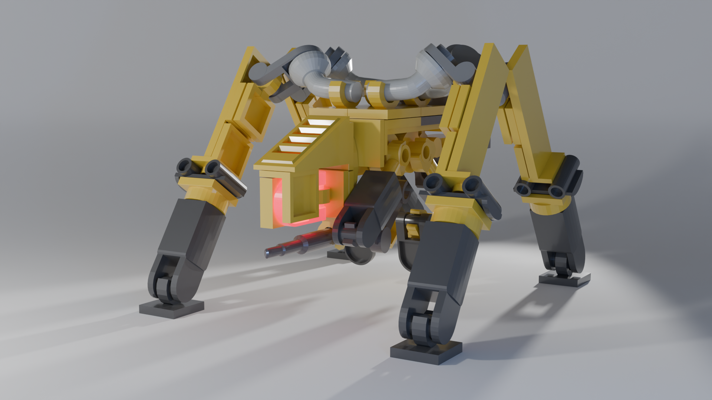

Mes compétences
Depuis mon arriver à l'IIM, j'ai beaucoup élargi mon domaine de compétence, que ce soit dans: le digital art, la 3D, le game design, l'audio visuel ou même le game art. Mais mes princpales compétences, et celles où je performe le mieux selon moi, reste quand même tous ce qui touche au jeu vidéos, plus précisements le game programming, ainsi que la 3D. Mes domaines de prédilection tourne donc autour de VS code(C#, python, C++, HTML, CSS, JS), Unity et Blender.

Jeu Vidéos
Jeu Unity
Dans le cadre des cours, Nous avions eu comme projet de crée de A à Z un jeu vidéo platformer en 2 dimensions, donc crée les assets, les animation du personnage et bien entendu la programmation du jeu, et tous cela via un moteur de jeu vidéo très répendu: Unity. Comme vous pouvez le voir juste au dessus, J'ai décidé de faire un jeu en pixel art dans lequel on contrôle un robot dans un monde post-apocalyptique. Comme je l'ai déjà dit, j'adore tous ce qui touche à la création de jeu vidéo, j'ai donc également adoré réalisé ce projet, et ait même obtenu la magnifique note de 19/20. C'est également l'un des premier jeu que je réalise entierement par moi même sur Unity, et j'en suis donc plutôt fier.
Jeu Python
Voici "The Cube" (et oui je sais... c'est pas très original comme nom), c'est un jeu que j'ai développé entierrement en Python quand j'étais en première, à l'aide de la bibliothèque "Pyxel" qui est une bibliothèque python permettant de faire des jeu-video en pixel art. C'est donc le tout premier jeu vidéo vraiment fonctionnel que j'ai crée, et évidement, comme tous jeu que l'on commence au Lycée, je ne l'ai jamais fini, mais j'en suis quand même très fier, et d'ailleur, si vous voulez le tester, il vous suffit de cliquer sur ce boutton (bonne chance pour le niveau 4, il est possible mais pas simple):
3 D
Mecha en Lego
Voici ma toute première création sur Blender. Nous avions pour consignes de crée en 3D, à l'aide du logiciel Blender, un mecha en lego de notre choix. J'ai donc du apprendre comment fonctionne ce logiciel, et comment fonctionne la 3D en général. J'ai choisis de m'inspirer d'un mecha présent dans Cyberpunk 2077, le "Militech Cerberus", et même en découvrant totalement la 3D, je m'en suis sorti avec un résultat très satisfaisant, et la note de 18/20.
Texturing
Pour ce devoir, on nous avait donné des différentes scènes blender non texturé: une bougie avec des yeux, une maison dans un style meideval, et une villa moderne. Nous avons donc dû appliqué toutes les textures, les lumières et également rajouté quelque élements sur les scène de la maison et de la villa. Le texutring est très différents du projet 3D "classique" que nous avions réalisé sur le mecha en lego, car ici on doit réalisé nous même des matriaux particulier, comme le bois, le métal etc ...